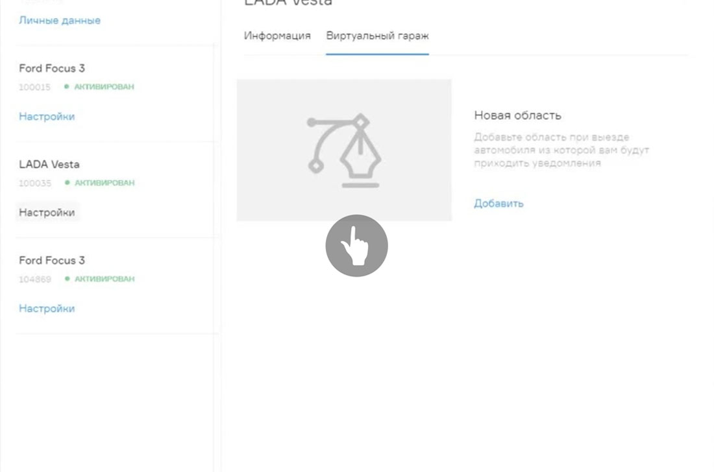

- Тип: Web-site
- Количество страниц: 18
- Запущен: Декабрь 2015
- URL: freshauto.ru
Биоинформационная система нового поколения, соединяющая в себе облачную картотеку биообразцов и электронную историю болезни пациентов. Предназначена для сбора, анализа и визуализации больших массивов клинических данных, необходимых при разработке лекарственных препаратов, особенно для так называемых "редких болезней".
Cloudbank использует облачную архитектуру и федеративную схему обмена данными между удалёнными биобанками, лабораториями, врачами и пациентами. Поддерживает “omics” технологии. Интегрирует пациентов, клиники, биотех и фарминдустрию в систему персонализированного здравоохранения.
-
Smart Home
Умный Дом начинается с контроллера RDI Smart House и беспроводных датчиков, которые отправляют сообщение на ваш смартфон, едва происходит важное событие у вас дома.
Веб-сайт
- Сбор и анализ большого количества телематических данных по застрахованным автомобилям.
- Совместная корректировка и/или создание новых страховых продуктов и тарифного руководства с персональной оценкой риска.
- Разработка уникальных скоринговых моделей оценки персонального страхового риска на основе телематических данных.
- Улучшение финансовых результатов по страховому портфелю.
- Внедрение скоринговых моделей в существующее тарифное руководство.
- Восстановление картины ДТП и детальный отчёт с данными по каждому страховому случаю.
- Селекция страхового портфеля и привлечение низкорисковых клиентов.
- Уменьшение затрат на урегулирование убытков и снижение вероятности мошенничества.
-
Smart Home
По мере роста потребностей, вы можете легко добавить совместимые устройства и создать Умный Дом, который автоматически реагирует на события по заданному Вами сценарию.
Smart City
Впоследствии, Вы можете создать защищенную сеть контроллеров, сенсоров, счетчиков, камер наблюдения и других беспроводных устройств для решения любых задач Умного Города.
-
18
страниц
-
74
недели
-
5
инженеров
-
2
дизайнера
-
250
часов проектирования
-

Пример работы интерфейса выделения области карты для Виртуального гаража.
-
At Intel, our vision for the evolution of the IoT happens in three stages – first, we must connect the unconnected.
-
Пример работы интерфейса выделения области карты для Виртуального гаража.
-
Пример работы интерфейса выделения области карты для Виртуального гаража.
- Микросервисы завоевывают FMCG 17 июля '17 В апреле компания PepsiCo запустила акселератор для стартапов - PepsiCo LAB, цель которого – создание взаимовыгодного партнерства компании со стартапами.
- Мы получили международные сертификаты качества 16 июля '17 Чтобы подтвердить, что деятельность вашей организации удовлетворяет стандартам ISO, необходимо пройти сертификацию в рамках национальной или одной из добровольных систем сертификации систем менеджмента.
- Резидентство в инновационном кластере Technounity 12 июля '17 14 июля завершился финальный этап отбора участников в Акселератор PepsiCo Tech LAB. Всего несколько команд успешно миновали все модули Предакселератора, получили наиболее высокие баллы за выполнение заданий, и.
- Мы получили международные сертификаты качества 16 июля '17 Чтобы подтвердить, что деятельность вашей организации удовлетворяет стандартам ISO, необходимо пройти сертификацию в рамках национальной или одной из добровольных систем сертификации систем менеджмента.
- Мы получили международные сертификаты качества 16 июля '17 Чтобы подтвердить, что деятельность вашей организации удовлетворяет стандартам ISO, необходимо пройти сертификацию в рамках национальной или одной из добровольных систем сертификации систем менеджмента.